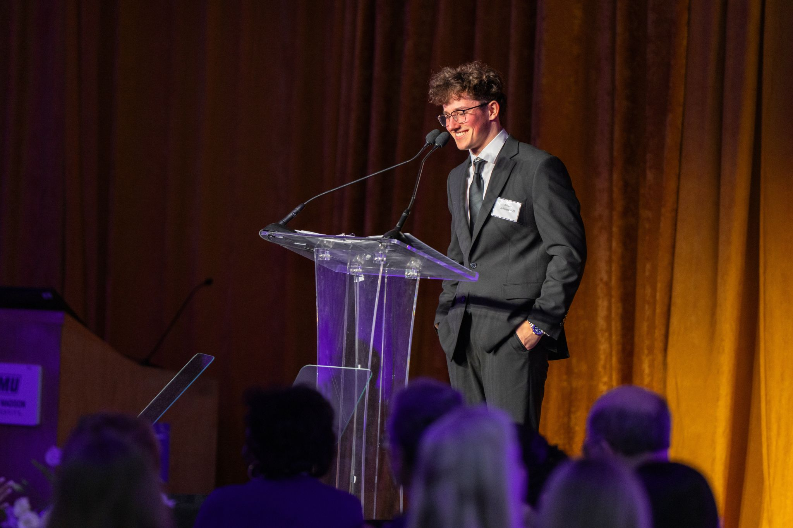
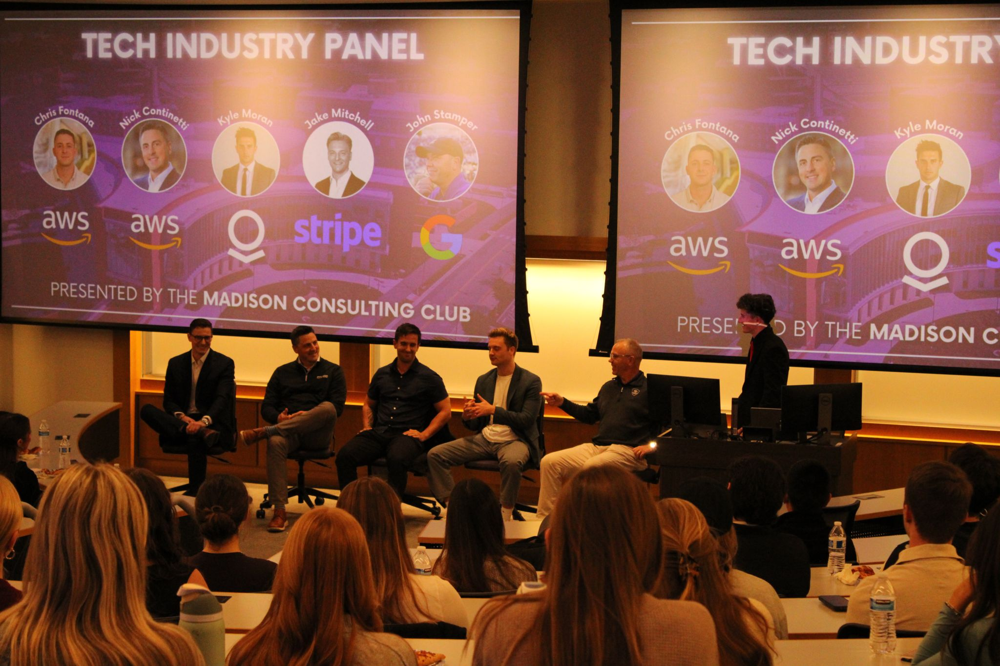
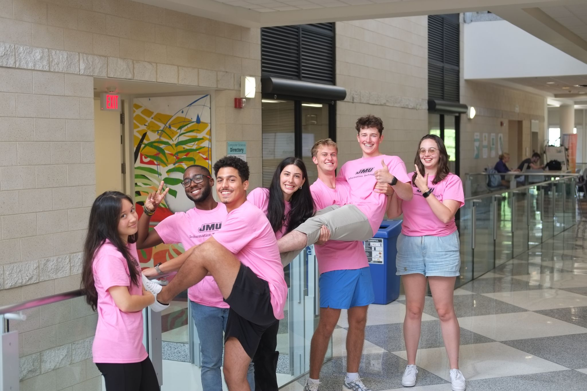
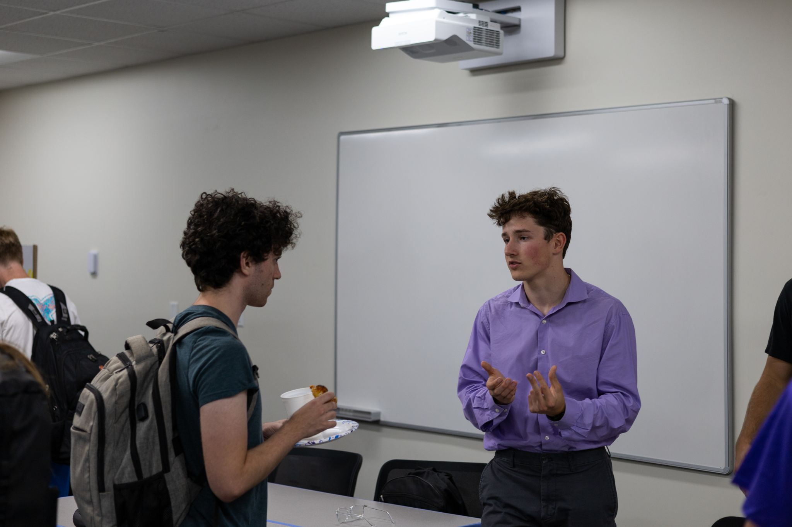
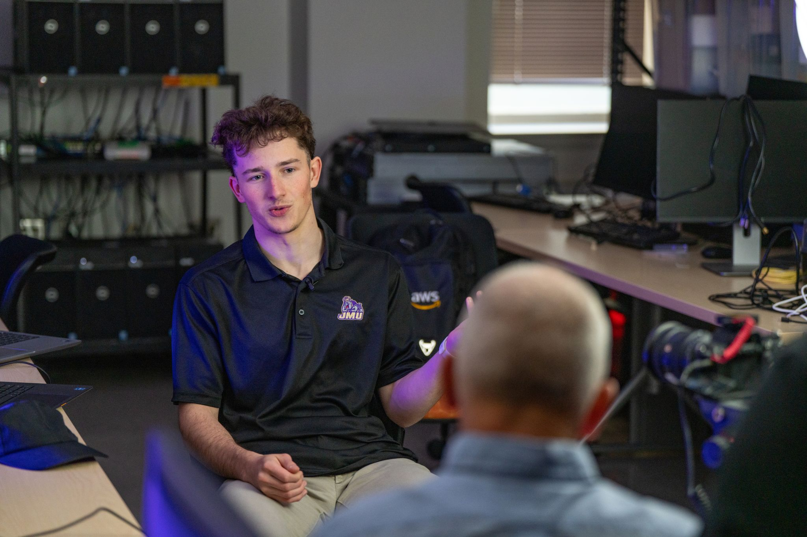

GTG-1002 & APT1 / PLA Unit 61398
Case study tracing how state-aligned intrusion tradecraft changed across two decades. Georgia Tech.
Six roles across defense, intelligence and cloud — from the only freshman on an $850M Army program to directing a core mission area of the $151B Golden Dome initiative.
Washington, DC. Directed a core mission area for Scale’s largest contract, the $151B Golden Dome initiative — developing and deploying cyber effects while managing a cross-functional team of 50+ engineers.
Led a multi-million-dollar AI security program for an Intelligence Community customer, driving customer syncs, roadmap planning and team coordination, and authored 10+ strategic reports delivered to IC leadership.
Chantilly, Virginia — Cyber Division. Built 153 Splunk panels ingesting 1M+ network packets, architected AWS VPC Flow Log logging, and presented findings directly to the Chief AI Officer.
Developed 10+ Python and Scapy traffic generators to automate operations and run hands-on technical training for FBI personnel.
Washington, DC. Deployed 5+ air-gapped AI security environments for DoW and IC customers on AWS CloudFormation — ML model scanning, vulnerability detection and runtime threat protection.
Drove federal sales and capture through demos, RFIs and solution architecture, contributing to HiddenLayer’s selection for the MDA’s $151B SHIELD IDIQ and its 10x+ ARR growth. Received an L6 return offer.
Reston, Virginia — DoW IRAD. Led a Python agentic pipeline with GitHub/GitLab integrations and air-gapped LLMs for automated code flaw detection, presented to the GitHub CISO and 200+ defense stakeholders. Received a return offer.
Arlington, Virginia — Professional Services. Engineered a full-stack RAG-based AI tool in Python and AWS CDK across 40+ cloud services including Bedrock, S3 and OpenSearch — shipped in half the projected timeline at <30ms latency for 100+ concurrent users, tripling KPIs and expanding scope 200%+.
Hosted a company-wide GenAI workshop for 50+ attendees on LLMs, NLP, vector embeddings and prompt engineering. Received a return offer.
Herndon, Virginia. My first job, and the only freshman on the team. Built a Python and Google Cloud inventory tracking app for the Army under the $850M ALECS program — cutting latency 45%, boosting performance 25%, presented to the CEO.
Ran IAM and Active Directory for 10,000+ users alongside the CIO, built the company’s first campus outreach program, ranked top performer for ticket closures in Q1 2025, and earned two promotions in under a year.
Rebuilt a division-wide telecom system across 23 schools serving 11,679 students. Python/pandas pipelines whose findings reached the Governor of Virginia.
10+ twenty-page threat intelligence reports on APT groups for U.S. government and military partners.
UI/UX across 20+ pages alongside web penetration testing.
Selected twice as the youngest apprentice in the cohort, mentored by Deloitte's AI & Engineering practice.
At 19 I wrote it from ManTech. At 20 I wrote it from AWS. At 21 I was too busy to notice.
On the birthday post I write every year — until the year that moved too fast.

I’m a National Security Technical Program Manager on Scale AI’s Public Sector team in Washington, DC — working on agents and evals, getting AI deployed and tested for the people who protect this country.
Before Scale I spent time across the FBI, AWS, HiddenLayer, Blue Sky Innovators and ManTech — architecting cloud and AI solutions, contributing to DoW-funded R&D, and supporting federal programs worth hundreds of millions to billions in scope. Six roles in three years, every one intentional.
I graduated from the James Madison University Honors College a year early as valedictorian of my major, and I’m finishing an M.S. in Computer Science at Georgia Tech on a 4.00. I hold 46 certifications and an active TS/SCI clearance with Full Scope Polygraph.
LLMs · agentic stacks · Claude · Codex · RAG · Bedrock
AWS · Splunk · Wireshark · Linux · wireless attack detection
Python · Java · JS/TS · React · Flask · CI/CD
Program & project management · DoD frameworks · Jira · Linear
Case study tracing how state-aligned intrusion tradecraft changed across two decades. Georgia Tech.
End-to-end ML security framework detecting and classifying wireless attacks across drone networks.
Principal Software Engineer on a consumer app across EC2, Cognito, S3 and API Gateway. Helped secure $50,000+ in funding.
Division-wide allocation system across 23 schools, with analysis that reached the Governor of Virginia.
Music education platform for underrepresented communities. The only freshman selected for the team.
Satellite communication system using Python and AI/ML.
For valued contributions, initiative, collaboration and partnership making a significant impact on the FBI’s Cyber Division.
James Madison University
Ranked first in GPA within the major while graduating a year early.
Presented to the university president; taught Honors coursework; $5,000 scholarship.
Founded the IT Ambassador program as a freshman and served through graduation.
James Madison University
Led the JMU Cyber Defense Club as Executive Officer.
William’s trajectory is going to the moon. He never asks for shortcuts, only for context that accelerates his own learning. That combination of initiative and humility is rare even among seasoned consultants.
Without question, one of the most promising young professionals I’ve come across. He doesn’t just execute. He engages. He’s not chasing titles. He’s doing the work.
Will is a rare breed. The first one in and the last to leave, not to clock hours, but because he’s genuinely obsessed with the pursuit of excellence.
Will is the definition of someone with a strong internal locus of control. Regardless of the challenge, one theme stands out: grit. He leads by example.
4.00 / 4.00 · specializing in artificial intelligence. AI Ethics & Society, Cognitive Science, Information Security Policies, Geopolitics in Cybersecurity.
3.97 / 4.00 · valedictorian of my major · President’s List 6/6 semesters · graduated a year early. Founded TechLink, the first IT club at JMU. President of Madison Tech Society, VP of Madison Consulting Club, Executive of the Cyber Defense Club.
Solutions Architect Pro · Generative AI Developer Pro · Data Engineer · ML Engineer · Developer · SysOps · Solutions Architect · AI Practitioner · Cloud Practitioner · Cloud Technical Essentials
CySA+ · CSAP · Secure Infrastructure Specialist · Security+ · CIOS · Network+ · A+ · IT Fundamentals+
Google AI Professional · GCP Fundamentals · Gemini for Workspaces · Automate Cybersecurity Tasks · Azure Serverless · Office Specialist
Deloitte Cyber · Deloitte Technology · Accenture Tech Consulting · PwC Technology · BCG Digital Transformation · Cisco Networking Technician




